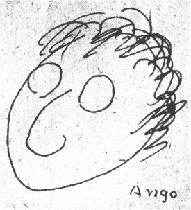

大望をいだく河童
坂口安吾
昔、池袋にすんでいたころ、小学校の生徒に頻りに敬礼されて、その界隈を遠廻りに敬遠して歩かねばならなくなったが、僕に似た先生がいたに相違ない。
戦争中、神田の創元社へよく遊びにでかけたが、日大生に時々敬礼された。何先生が僕に似ているのか気にかかった。
まだ焼けて幾日にもならぬ高田馬場駅で、夜であったが、軍服の青年（将校らしい）に挨拶され、第二高等学院の何々先生ではありませんか、とこれは明らかに名前を言われたのだが、忘れてしまった。間違われて挨拶を受けるのはキマリの悪いもので、蒲田の易者は僕が手をだすと、
「旦那からかっちゃアいけませんや」という。本職の名人と思ってるのか、蒲田の顔役に似た旦那がいるのかも知れぬ。
井伏鱒二村長がキイキイ声で、
「ヤイ安吾、貴様、けしからんぞ」
「なぜ」
「銀座を歩いていたろう。ヤイ、安吾、僕がうしろから背中をたたいたら、新田潤じゃそうじゃないか。恥をかいた。よく似とる。けしからんぞ、こら」
後日浅草のお好み焼き屋で新田潤にはじめて会ったが、似ているものか。
中村地平と僕が一緒に歩くと、どちらが兄さんですか、ときかれたことが二三度あったが、似ていると直覚すると誰でも似て見えてしまうのだろう。中村君と僕は眉の濃く太いのが共通していた。
むかし小林秀雄は酔っ払うと僕に向って、ヤイ、河童、と言った。髪の毛が額にたれるせいだろう。

僕は然し、奇妙なことを言う奴だ、お前の方がよっぽど河童に似てるじゃないか、河童の絵を見ろ、とんがったクチバシと、三角にすぼまったアゴと、小林によく似てら。
「ヤイ、河童」
「変なことを言うな。お前の顔がオレに映って見えるんじゃないのか」
「なんでい、河童」
わけの分らん男だ。だから彼を独断家と称するのである。
時々くる雑誌記者がある日、すこしモジモジして、先生、実はよく似た人がいるんです、と言う。
「誰に？」
「ハア、実は、僕の郷里の乞食ですけど」
僕はギャフンとしたが、やむなく心を励まして、
「どこんとこが似ていた？」
「どこといって瓜二つですけど、なんとなく大望をいだく様子がソックリですね」
だから僕はジャーナリストに会いたくないのだ。礼節を知らないのである。
●表記について
- このファイルは W3C 勧告 XHTML1.1 にそった形式で作成されています。